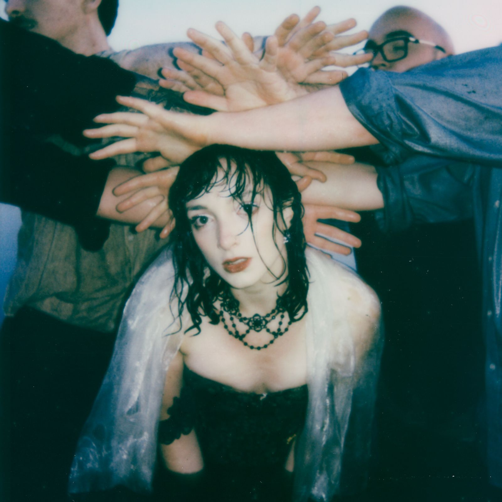
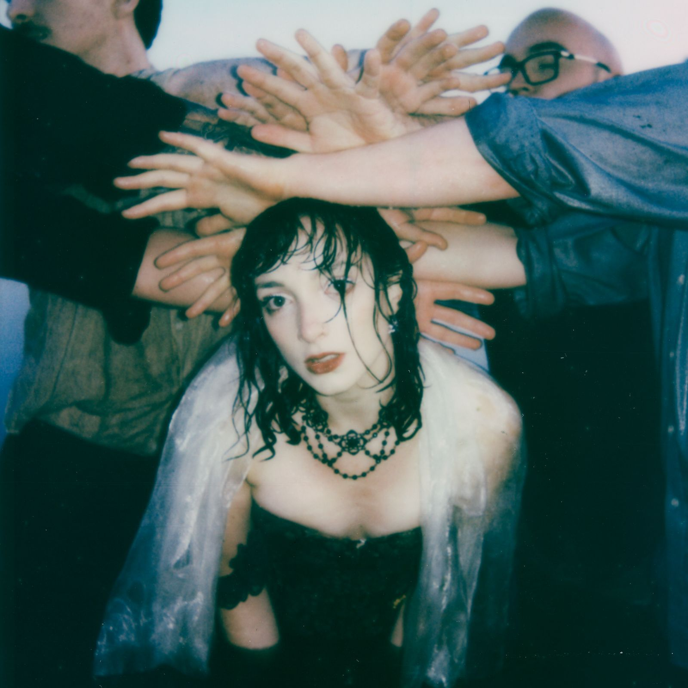
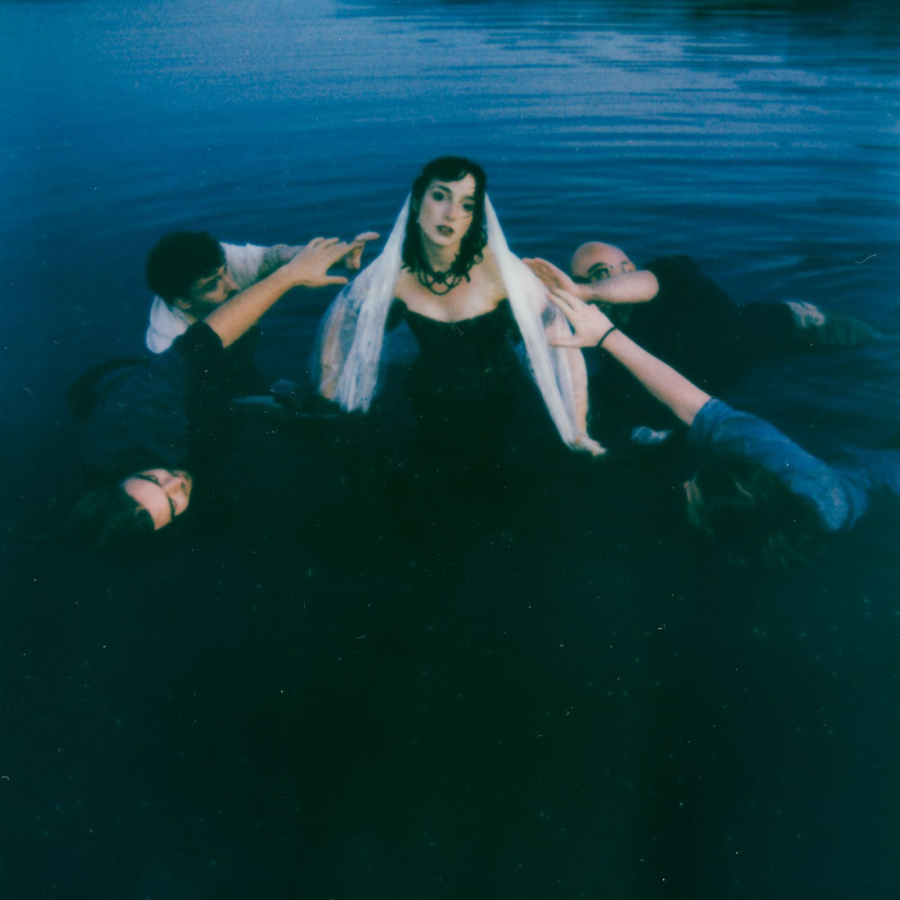
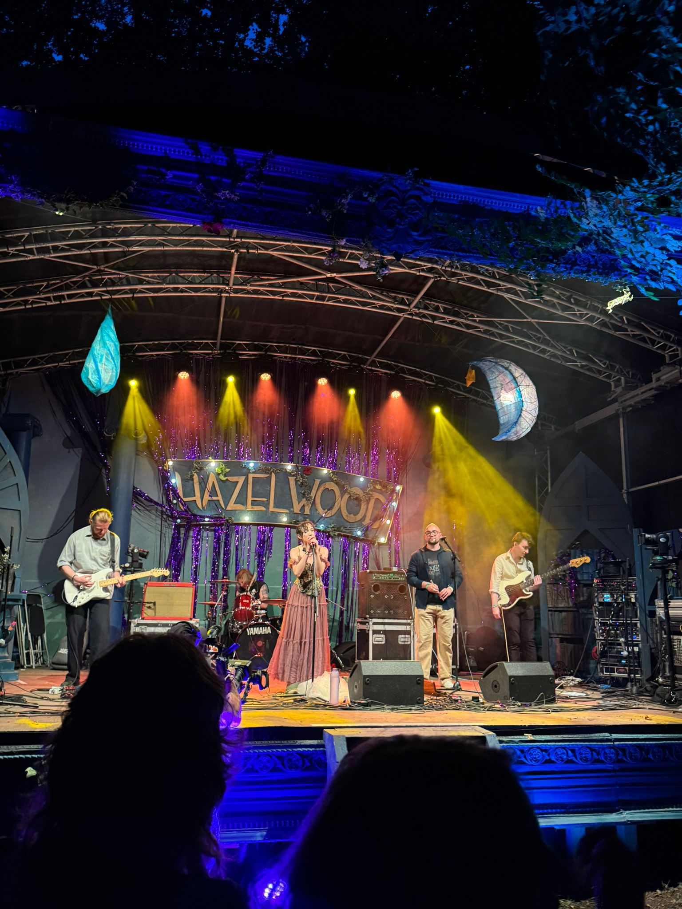
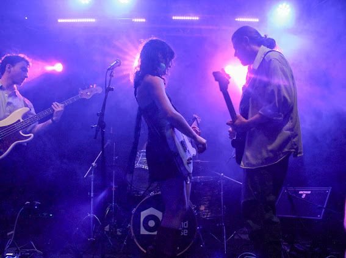
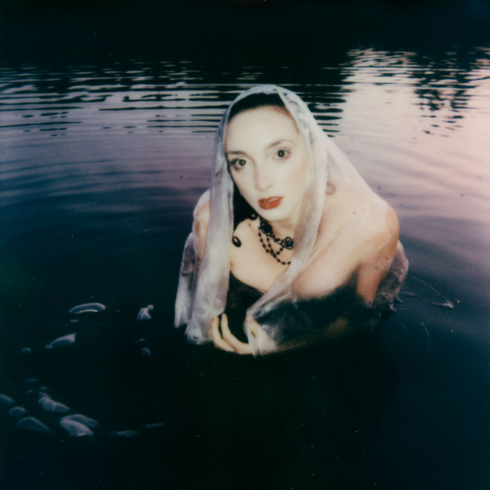
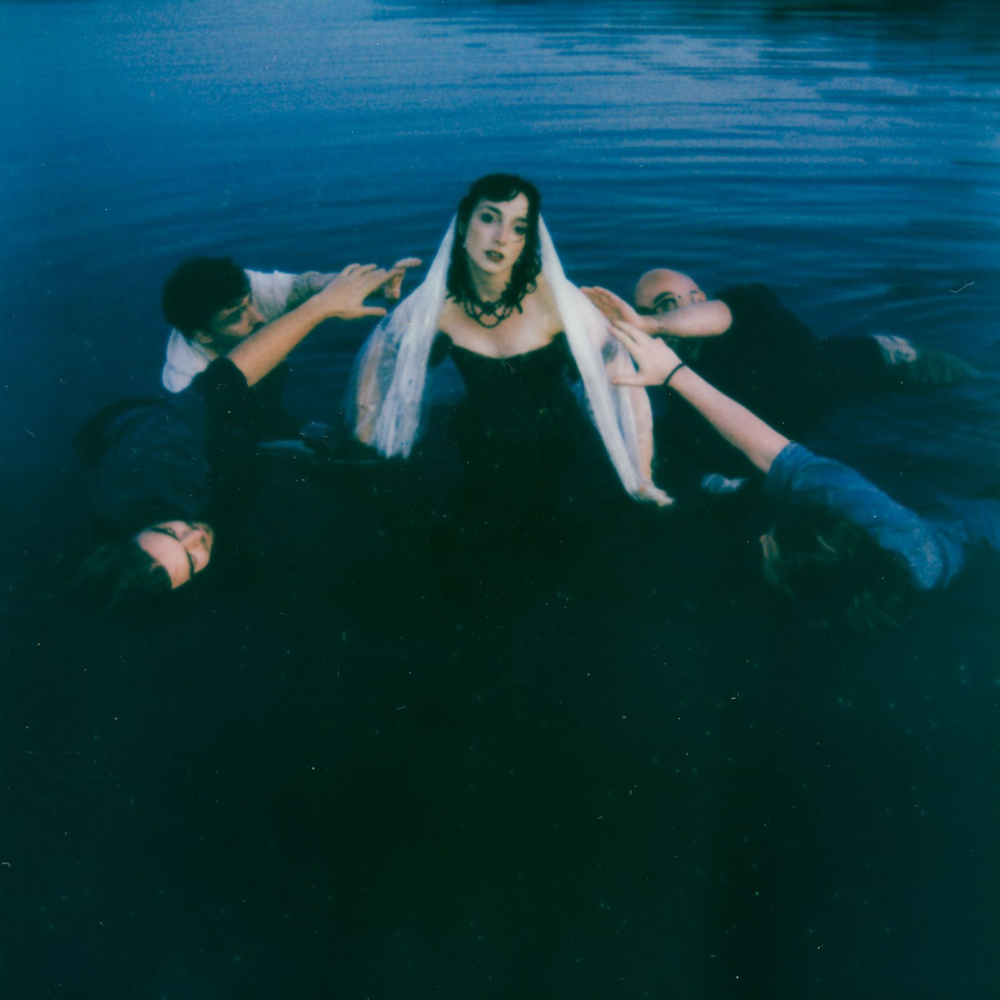
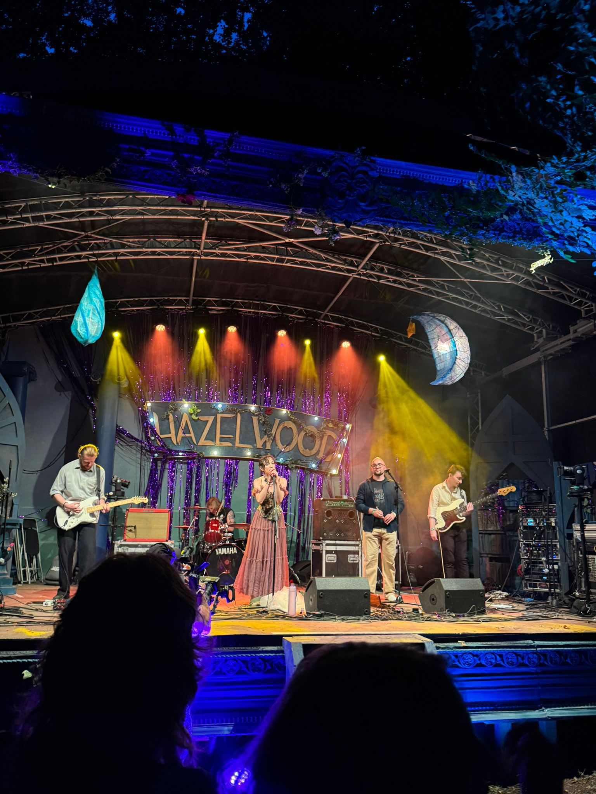
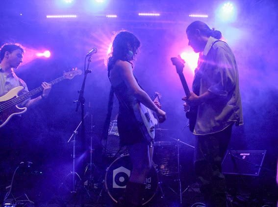
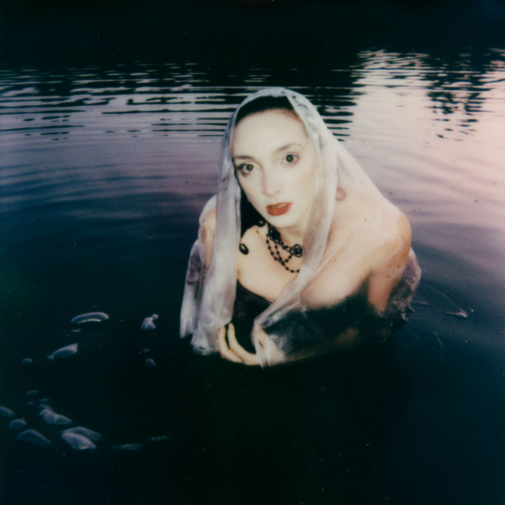

Electronic Press Kit
‘Entirely seamless’ - Tallulah Whaley, TN2 Magazine
About Us - English
Jessie & the Veil are a folk-rock band from Dublin. Their work blends the storytelling aspect of folk music with the emotional intensity and theatricality of artists like Wolf Alice, Florence + the Machine, and The Cranberries. Hot off their hour-long debut at Electric Picnic in 2025, the group composes music in Irish and in English. The Irish language is fundamental to their music: ‘infused in the way in which the band performs; they move through the songs with such intentional care and love of culture that audiences have no choice but to care right alongside them’. Formed through singer-songwriter Jessie Dingle’s collaboration with exceptional musicians: Lennon Connolly on drums, Jack Farrell on bass, Aidan Clair on guitar and Declan McCabe on flute/whistle, the band has developed a sound that has been described as ‘punchy, rock-focused-yet folk infused’. The band fuses Irish traditional music with a contemporary, dynamic edge, that makes ‘genre boundaries feel irrelevant in the face of their assured hybrid style’. Currently, they are preparing for the release of their first single, ‘An Bhfuil tú i nGrá Léi?’ - releasing February 1st 2026.
Beagáinín Fúinn - Gaeilge
Is banna folk-rock é Jessie & the Veil atá lonnaithe i mBaile Átha Cliath. Spreagtha ag ceoltóirí cosúil le Wolf Alice, Florence and The Machine agus The Cranberries, meascann a gcuid cheoil gnéithe do cheol traidisiúnta na hÉireann le fuaim mhothúcánach agus neamhshaolta. Sheinn siad ag an bPicnic Leictreach i 2025 le seit i nGaeilge agus i mBéarla a bhí uair in fhad. Trí comhoibriú Jessie Dingle le ceoltóirí cumasacha: Lennon Connolly ar na drumaí, Jack Farrell ar an dord, Aidan Clair ar an ngiotar agus Declan McCabe ar an feadóg/fliúit, cruthaíonn Jessie & the Veil ceol bríomhar, nua atá spreagtha ag an mbéaloideas agus cumtha i mBéarla agus i nGaeilge. Faoi láthair, tá an banna ag ullmhú lena gcéad singil, ‘An Bhfuil tú i nGrá Léi ?’ a eisiúint ar an gcéad lá de mhí Feabhra, 2026
Press Images

 

 






